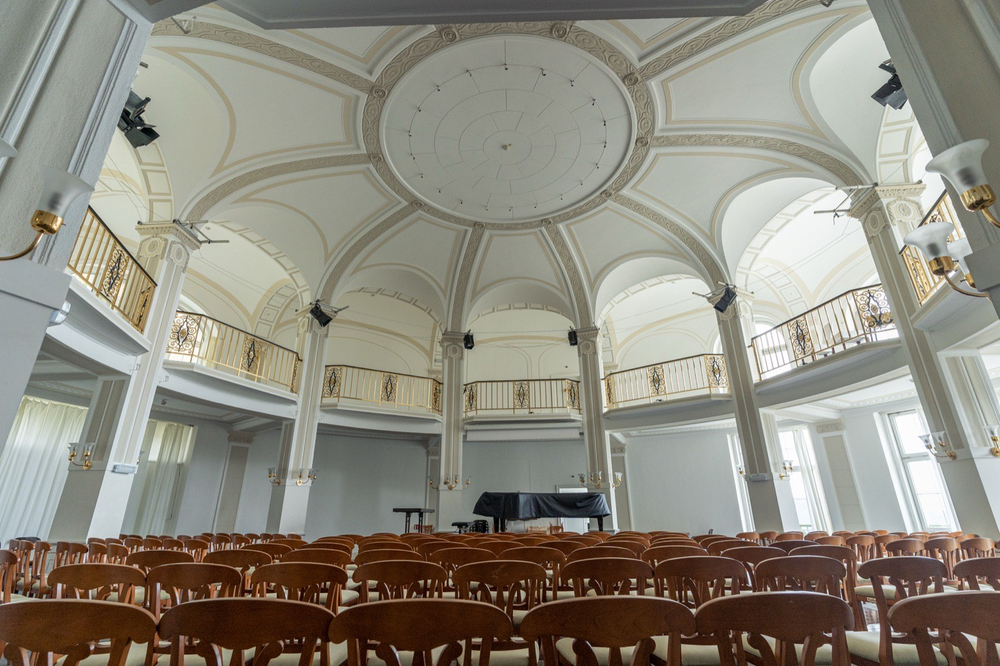
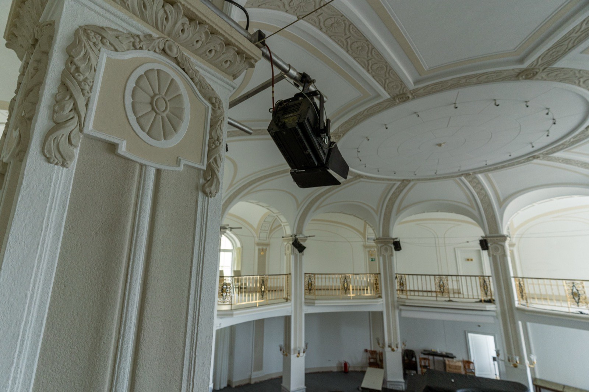
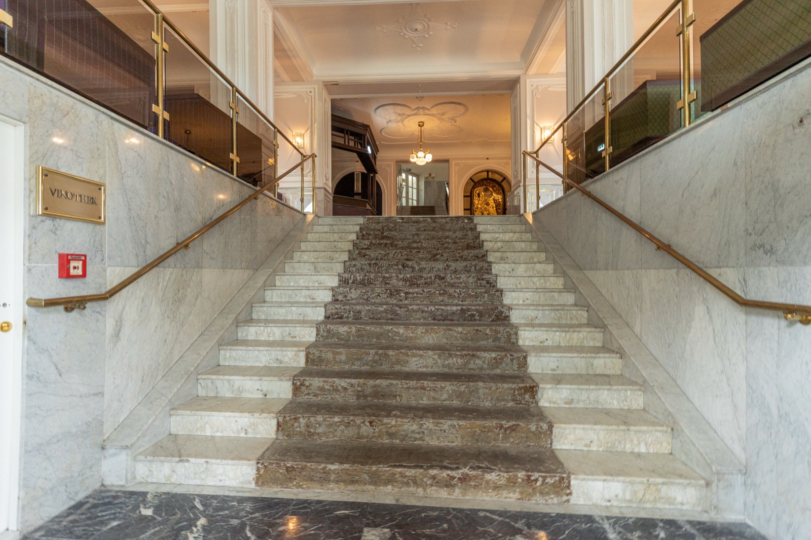
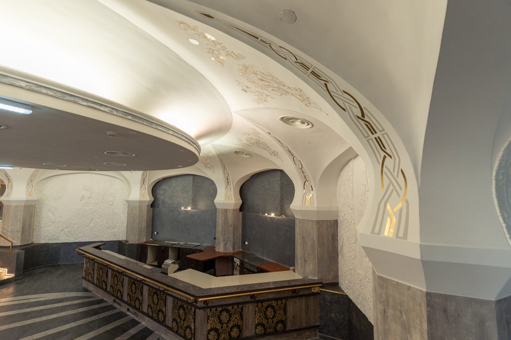
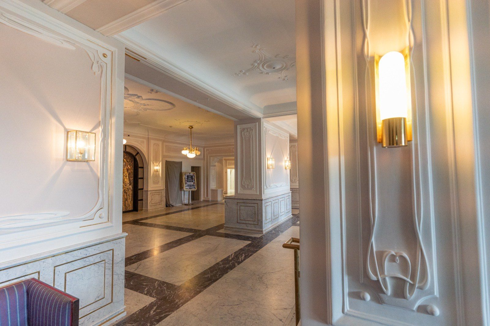
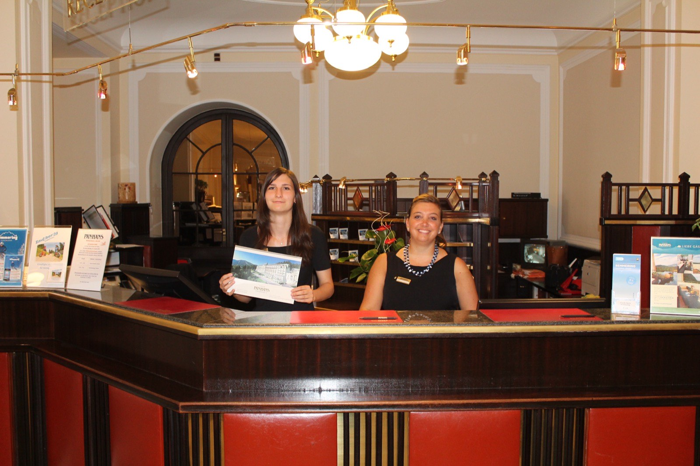

Kultur.Sommer.SemmeringKultur.Sommer.Semmering
Sommerfrische für die SinneA summer retreat for the senses
Der Semmering ist nicht nur für seine sportlichen Attraktionen bekannt, sondern bietet auch kulturell ein vielfältiges Angebot. Während der Sommermonate finden im Zuge des Kultur.Sommer.Semmering jährlich einzigartige Veranstaltungen statt — Austragungsorte sind das historische Grand Hotel Panhans und der neu errichtete Kulturpavillon.The Semmering is known not only for its sporting attractions but also offers a rich cultural programme. During the summer months, the Kultur.Sommer.Semmering hosts unique events every year — held at the historic Grand Hotel Panhans and the newly built culture pavilion.
Intendant ist der österreichische Pianist und Dirigent Florian Krumpöck; gemeinsam mit Geschäftsführerin Nina Sengstschmid lädt er das Publikum auf die Spuren von anno dazumal — schon Arthur Schnitzler, Alma Mahler und Stefan Zweig reisten um die Jahrhundertwende zur Sommerfrische auf den Semmering.Artistic director is the Austrian pianist and conductor Florian Krumpöck; together with managing director Nina Sengstschmid he invites audiences to follow in the footsteps of times past — around 1900, Arthur Schnitzler, Alma Mahler and Stefan Zweig came here for the Sommerfrische, the classic Austrian summer retreat.
Kultur in historischer KulisseCulture in a historic setting






Kultur & KulinarikCulture & cuisine
Konzerte & LesungenConcerts & readings
Klassik, Literatur & mehr im Panhans und Kulturpavillon.Classical music, literature & more at the Panhans and culture pavilion.
Festival-GourmetmenüFestival gourmet menu
Passend dazu: das 5-Gang-Menü »Grand View« von Chef Yurii Novikov.To match: the 5-course »Grand View« menu by chef Yurii Novikov.
Was auf den Teller kommtWhat lands on the plate
Zuletzt u. a.: Rindertatar oder Aal-Tarte · Kaspressknödel oder Kürbissuppe · Ente sous-vide, Heilbutt oder Sellerie-Confit · zwei Desserts — mit österreichischen Weinbegleitungen. Das aktuelle Menü stellt Chef Yurii Novikov saisonal zusammen.Recently e.g.: beef tartare or eel tart · cheese dumplings or pumpkin soup · sous-vide duck, halibut or celeriac confit · two desserts — with Austrian wine pairings. Chef Yurii Novikov composes the current menu seasonally.
Künstlergespräche im SporthotelArtist talks at the Sporthotel
»Einblicke mit Ausblick« — jeweils 11:00 Uhr auf der Aussichtsterrasse des Sporthotels. 2026: 5.7. Maya Hakvoort · 25.7. Maria Bill · 30.7. Manuel Rubey · 21.8. Andrea Eckert · 28.8. Robert Meyer. Dazu samstags ab 18 Uhr Klavier- & Saxophon-Abende im Hotel (Juni–Oktober).'Einblicke mit Ausblick' — insights with a view, at 11 am on the Sporthotel's panorama terrace. 2026: 5 Jul Maya Hakvoort · 25 Jul Maria Bill · 30 Jul Manuel Rubey · 21 Aug Andrea Eckert · 28 Aug Robert Meyer. Plus piano & saxophone evenings at the hotel every Saturday from 6 pm (June–October).
Häufige FragenFrequent questions
Alle FAQs für Sommer & Winter →All FAQs for summer & winter →
 Hirschi
Hirschi